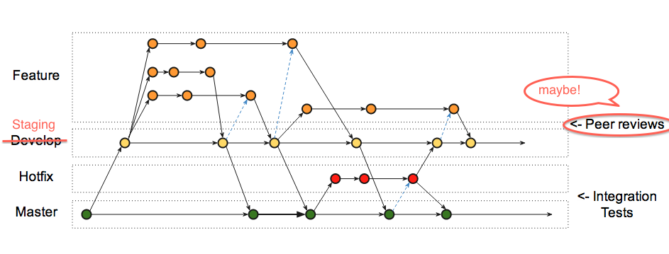

You all know how to pull a repo, switch between branches, initiate a merge, etc. Here are the things I usually have to look up when I need them.
# add all changes to previously tracked files (add equivalent of commit -a)
$ git add -u
# add everything (but NOT deletions)
$ git add .
# add tracked, untracked, and deletions
$ git add -A
# remove something you've added
$ git reset HEAD
# delete a branch
$ git branch -d
# fetch changes from the server without changing your working copy
$ git fetch # note this will fetch all branches of the repo
# undo a local merge; get the hash from running git log
$ git reset --hard
# undo a merge that has been PUSHED
$ git revert -m 1
My .gitconfig
[user]
name = Evan Davis
email = evan@boundless.com
[credential]
helper = osxkeychain
[color]
diff = true
[merge]
tool = p4merge
[mergetool]
prompt = false
keepBackup = false
tool = p4merge
[mergetool "p4merge"]
cmd = /usr/local/bin/p4merge >>
<< "$BASE" "$LOCAL" "$REMOTE" "$MERGED"
keepTemporaries = false
trustExitCode = false
keepBackup = false
[diff]
tool = "bbdiff"
[difftool]
prompt = false
[difftool "bbdiff"]
cmd = /usr/local/bin/bbdiff >>
<<--wait --resume "$LOCAL" "$REMOTE"
[alias]
a = add
ci = commit -m
ca = commit -am
co = checkout
b = branch
f = fetch
m = merge
up = pull
[push]
default = current
/usr/local/bin/p4merge
#!/bin/sh
/Applications/p4merge.app/Contents/MacOS/p4merge $*
chmod +x p4mergeso the script can run as an executable.
git mergetool
The map
Make a branch:
$ git checkout staging $ git checkout -b NAME
You've done some work, but there have been hotfixes. You need to get the latest updates to the main branches.
# Get changes from staging and master
$ git pull -f origin staging && git pull -f origin master
Maybe you want to clean up partial commits you made along the way
$ git rebase -i staging
Merge into Staging, not master.
/
#